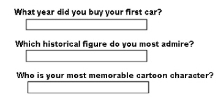

|
IdentityGuard Server 13.0 Administration Guide |
|
IdentityGuard Server 13.0 Administration Guide |
Knowledge-based authentication (also known as question-and-answer authentication) involves asking users a series of questions to which they must respond correctly using preregistered answers.
Your organization creates these questions. The personalized answers ensure that only the user is likely to respond correctly. Users provide their own answers at registration. The answers are referred to as authentication secrets. They are stored in encrypted form in the repository.
Users must provide information that an attacker is unlikely to be able to provide. By presenting familiar questions to users, the users gain additional confidence that they are authenticating to your legitimate website or application.
Entrust IdentityGuard provides a complete knowledge-based authentication solution that comprises creation of user question and answer pairs as well as maintenance of this data. Entrust IdentityGuard also allows your organization to use question and answer data created and managed in an external system and used by Entrust IdentityGuard for knowledge-based authentication.
Most of this section describes Entrust IdentityGuard’s built-in knowledge-based authentication capabilities. For information about using Entrust IdentityGuard with a third-party question and answer system, see Using external Q&A data for Entrust IdentityGuard authentication and the Entrust IdentityGuard Programming Guide.
The process by which users enroll their question choices and personal knowledge answers is simple. During registration or enrollment, have users select several questions and provide easily-remembered answers. Later, when they are challenged with one or more knowledge-based questions, they can answer them to authenticate. You can allow the user to alter the answers at any time, provided they are logged in to Entrust IdentityGuard.
Sample question-and-answer prompts

Entrust IdentityGuard allows organizations to select a number of such authentication secrets or facts for each user and prompt for all answers or just a subset. Using knowledge-based authentication, Entrust IdentityGuard has the ability to:
● store and update personal answers to the questions chosen by users
● save challenge questions until successful completion of all question in the challenge (this is called challenge retention)
● lock out a user based on a configured number of failed attempts
● set the maximum number of questions to ask a user in any given scenario
● set the number of questions that a user can answer incorrectly (if any) and still pass authentication
● allow for some inaccuracy (such as different spelling) in the answers supplied
● randomly present a subset of questions for the user from the stored question set
To configure Entrust IdentityGuard for knowledge-based authentication, complete the following tasks:
● Create a list of questions and answers for users to select (see Question requirements).
● Ensure that administrators have the required permissions to complete the following tasks and manage knowledge-based authentication (see User question and answer permissions).
● Using the Knowledge-based authentication Policies pages of the Administration interface, complete the following tasks:
– Set knowledge-based (Q&A) as an authentication option for each applicable group (see Configuring knowledge-based authentication policies).
– Set the number of questions asked (see Set the number of questions asked).
– Set the number of correct answers required. See Set the number of correct answers required).
– Set the response accuracy or tolerance level. See Set the accuracy level of answers.
● Use the Properties Editor to set the Entrust IdentityGuard property related to the word map file (see Edit the word map file).
After you configure Entrust IdentityGuard policies and properties, configure your application to use knowledge-based authentication. For more information, see the Entrust IdentityGuard Programming Guide.
Note: Many concepts discussed in the following sections were first presented by Mike Just in “Designing and Evaluating Challenge-Question Systems” IEEE Security & Privacy, vol. 02, no. 5, pp. 32-39, September-October, 2004.